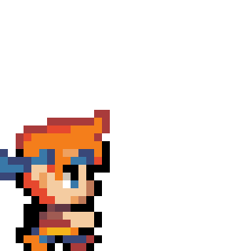
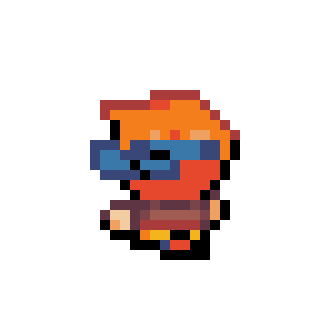

BRODY
FIGHTER
In a small coastal village nestled amidst the roaring waves, lived a young boy named Brody. He was an enigma, for his true family was shrouded in mystery. Instead, he had been raised by a notorious pirate named Captain Flynn, who discovered the young lad stranded on a remote island. Under Captain Flynn's guidance, Brody learned the ways of the sea, honing his skills in navigation, swordsmanship, and the art of plundering. But little did anyone know, Brody harbored a remarkable secret. Deep within him lay a power that could bend the very rays of the sun to his will.
PLAY

